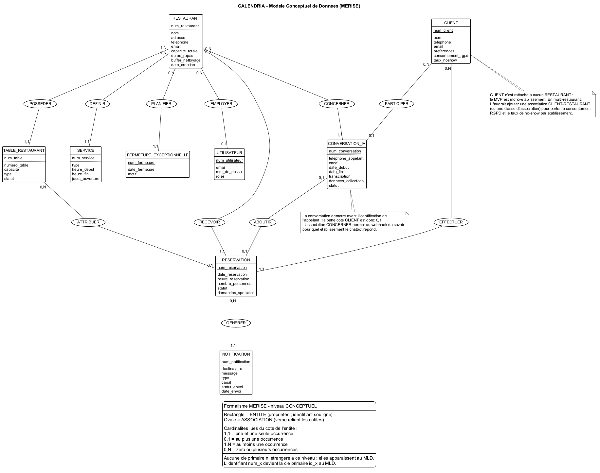
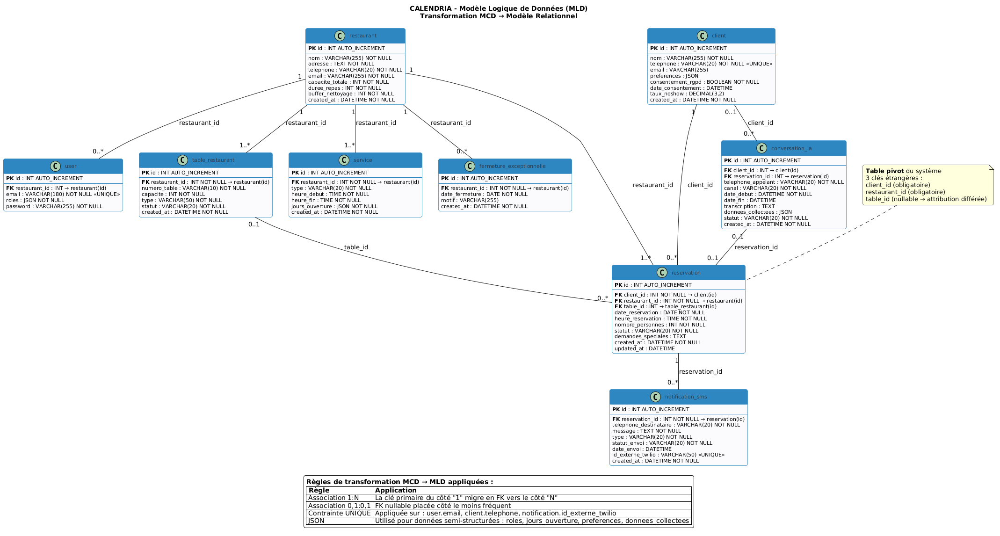
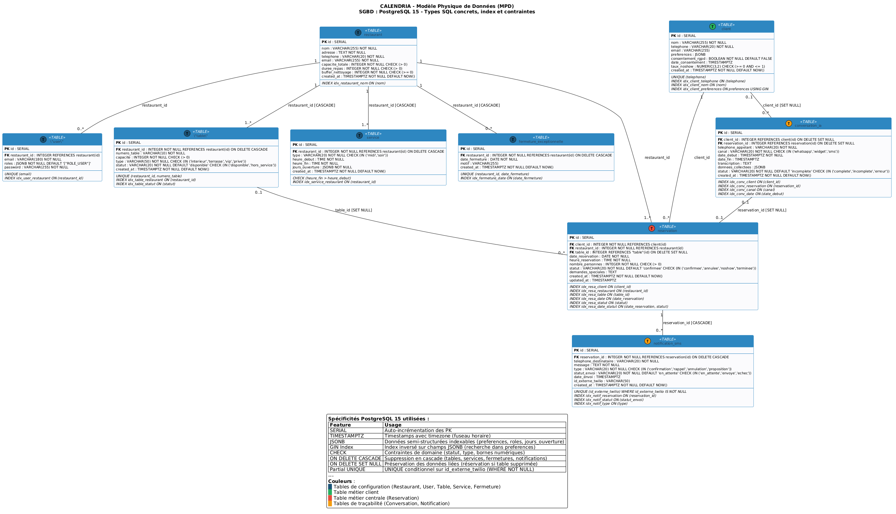
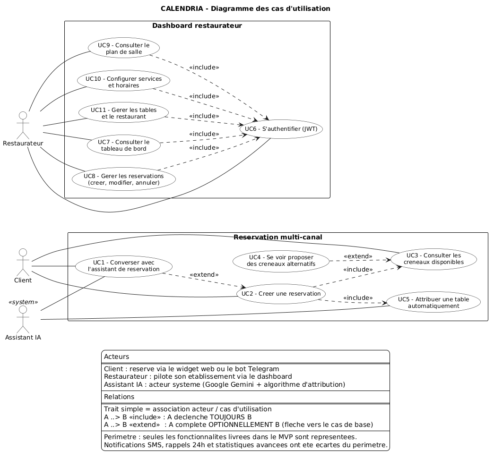
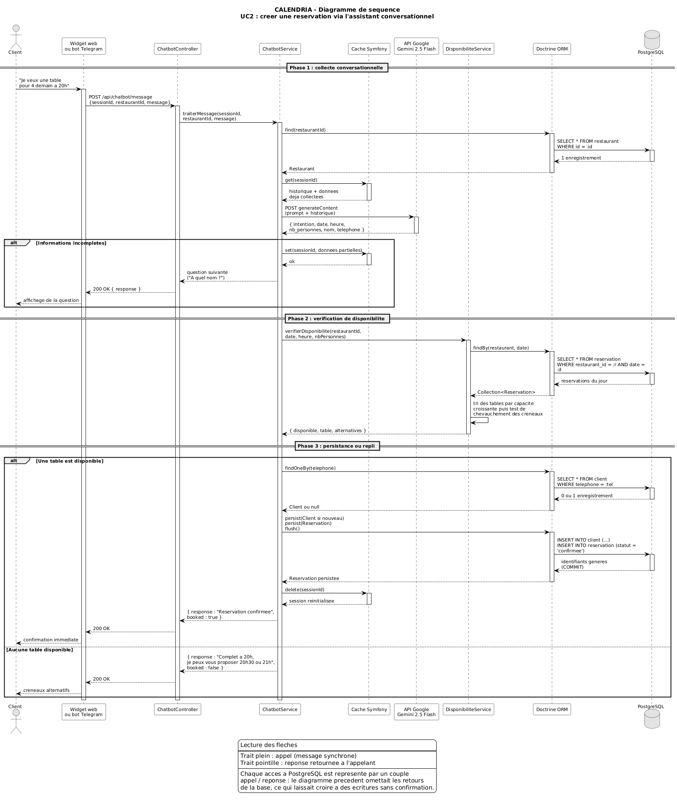
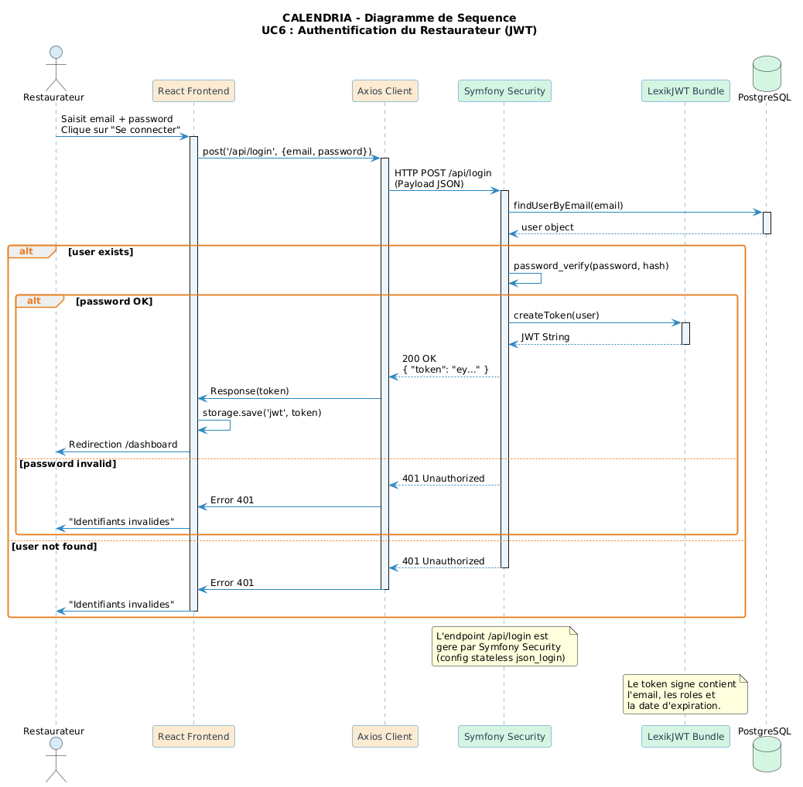
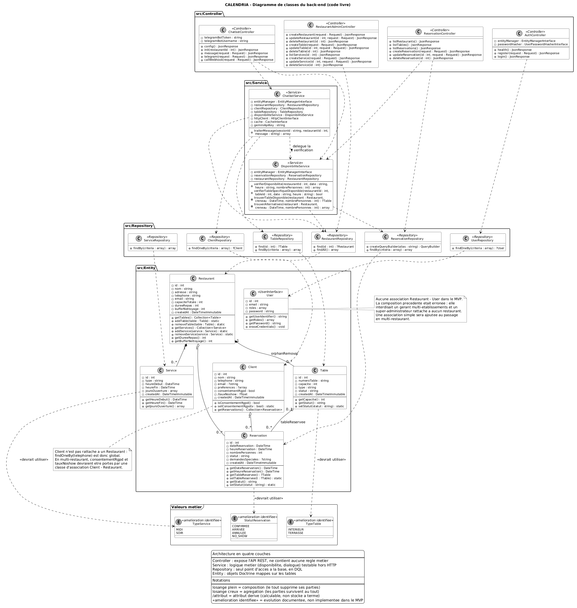
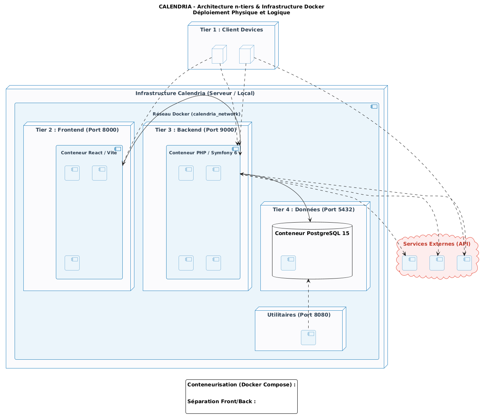

CALENDRIA
pour la restauration indépendante
Sommaire
1. Le projet
Présentation, contexte métier, problématique, cahier des charges et objectifs SMART.
2. Gestion de projet
Méthode agile adaptée au travail seul, trunk-based development, planning des 6 jalons.
3. Conception UI/UX
Sitemap, wireframes, charte graphique, maquettes et accessibilité.
4. Modélisation données
Démarche MERISE : MCD, MLD, MPD et dictionnaire de données.
5. Architecture & UML
Cas d'utilisation, séquences, classes, architecture N-tiers et 4 couches.
6. Sécurité & tests
OWASP Top 10, RGPD, politique de tests PHPUnit, pipeline CI/CD.
7. Veille
Veille technologique et veille sécurité menées pendant 6 mois.
8. Bilan
Difficultés rencontrées, taux de couverture fonctionnelle, perspectives.
9. Démonstration
Application en production : dashboard, plan de salle, chatbot IA, widget en iframe et Telegram.
Qui je suis & ce que j'ai construit
À propos de moi
- Je m'appelle Safi Bougherara, candidat au titre professionnel Concepteur Développeur d'Applications (RNCP niveau 6).
- Mes centres d'intérêt se situent dans le développement web, l'architecture logicielle et l'automatisations des processus.
- Ce projet est l'aboutissement de six mois de développement full-stack.
Le projet en une phrase
CALENDRIA est un assistant de réservation multi-canal propulsé par l'IA : il répond aux clients 24h/24 — via un widget web, un bot Telegram ou un agent vocal —, vérifie la disponibilité en temps réel, attribue la meilleure table et confirme la réservation automatiquement.
Chiffres clés
| Indicateur | Valeur |
|---|---|
| Couverture fonctionnelle | 82% (14/17) |
| Entités persistées | 6 tables |
| Canaux de réservation | 3 (web, Telegram, vocal) |
Le projet CALENDRIA
Contexte métier, problématique du restaurateur, solution proposée et cahier des charges fonctionnel.
Le commanditaire et son besoin
| Fiche commanditaire (fictif — profil-type du client visé) | |
|---|---|
| Commanditaire | M. Gilles MOREL, gérant |
| Établissement | « Le Gourmet Parisien » — gastronomique |
| Capacité | 10 tables · 40 couverts |
| Adresse | 15 rue de la Paix, 75001 Paris |
| Rôle projet | Validation fonctionnelle, retours maquettes, recette finale |
Secteur visé
Restauration — restaurants indépendants, brasseries, bistrots et établissements gastronomiques.
7 points de douleur du restaurateur
Charge téléphonique
Le personnel de salle répond pendant le service, au détriment des clients présents.
Disponibilité limitée
Aucune prise de réservation hors ouverture : matin, après-service, jours de fermeture.
Perte de clients
Sans réponse immédiate, le client réserve chez le concurrent.
Erreurs de saisie
Double réservation, mauvaise estimation des couverts, oubli de rappel.
Remplissage sous-optimal
Difficulté à combiner les tables de 2, 4, 6 et 8 personnes.
No-show
Clients absents sans prévenir : perte sèche de chiffre d'affaires.
Coût du personnel
Ressource humaine dédiée à une tâche répétitive et automatisable.
La réponse
Un assistant IA disponible 24/7 qui réserve à la place du restaurateur.
Le parcours d'une réservation
🌐 Widget Web
Chatbot intégrable en iframe sur le site du restaurant — /widget?restaurantId=X.
📲 Bot Telegram
Webhook /api/chatbot/telegram, gestion de session, confirmation immédiate.
📞 Agent vocal IA
Retell AI appelle /api/chatbot/call et lit les alternatives horaires à voix haute.
Les 3 canaux partagent la même API REST, la même logique conversationnelle et le même algorithme de disponibilité — pas de duplication de code métier.
La valeur ajoutée mesurable
Pour le restaurateur
- Zéro appel manqué, y compris hors service
- Remplissage optimisé par l'algorithme d'attribution
- Pilotage centralisé dans un dashboard unique
Pour le client
- Réponse instantanée, sans attente en ligne
- Choix du canal : web, messagerie ou téléphone
- Confirmation immédiate et alternatives proposées
Des objectifs SMART
| Critère | Engagement pris au Jalon 1 |
|---|---|
| Spécifique | Assistant virtuel multi-canal capable de gérer automatiquement 90% des réservations via Widget Web, Telegram et agent vocal. |
| Mesurable | Temps de gestion −70% · Taux de complétion chatbot > 95% · Validation automatique instantanée · No-show −25 à 30%. |
| Atteignable | Technologies éprouvées (Symfony, React, PostgreSQL) et périmètre réaliste pour 6 mois en solo. |
| Réaliste | MVP chatbot fonctionnel pour 1 restaurant, développement séquentiel jalon par jalon. |
| Temporel | Livraison finale au 30 juin 2026, avec 6 jalons mensuels. |
Objectifs fonctionnels
- Automatiser la réservation sans intervention humaine
- Optimiser le remplissage des tables
- Centraliser toutes les réservations
- Réduire les no-show
Objectifs techniques
- Respecter la stack imposée (Symfony / React / SQL / Docker / CI-CD)
- Conformité RGPD et OWASP Top 10
- Couverture de tests > 80% des classes métier
- Déploiement en 1 commande
Périmètre fonctionnel : ce qui est dans, ce qui est hors
✅ IN SCOPE
- Module IA conversationnel multi-canal (3 canaux)
- Algorithme d'attribution intelligente des tables
- Calcul de disponibilité temps réel + alternatives à 30 min
- Dashboard React : CRUD réservations, plan de salle interactif
- Gestion des tables et des services (horaires d'ouverture)
- Mode sombre persistant · fiche client avec historique (reportée : non livrée dans le MVP)
- Authentification JWT RS256 · rate limiting
- Containerisation Docker + CI/CD + déploiement cloud
❌ OUT OF SCOPE (assumé)
- Paiement en ligne / acompte de réservation
- Commande de plats et gestion de menu
- Application mobile native
- Multi-langues (français uniquement)
- Multi-restaurants dans le MVP (données déjà rattachées à un restaurant ; reste à lier les comptes aux établissements)
- Fermetures exceptionnelles (modélisées au MCD, reportées au-delà du MVP)
- Intégration avec les logiciels de caisse
- Système de fidélité ou d'avis clients
Le hors-scope a été défini dès le Jalon 1 pour sécuriser la tenue du planning : chaque exclusion est une décision de cadrage, pas un abandon.
La stack et ses justifications
| Back-end | Version | Justification |
|---|---|---|
| Symfony | 6.4 LTS | Framework imposé, support sécurité jusqu'en 2027 |
| PHP | 8.4 | Typage strict, property hooks |
| Doctrine ORM | 3.x | Requêtes préparées ⇒ anti-injection SQL |
| LexikJWT | 2.x | Authentification stateless RS256 |
| PostgreSQL | 15 | Contraintes fortes, type JSON natif, performances |
| Front & DevOps | Version | Justification |
|---|---|---|
| React | 19 | Framework imposé, écosystème riche |
| TypeScript | 5.9 | Typage statique = filet de sécurité |
| Vite | 7 | Build rapide, HMR |
| Docker / Compose | 24+ / 2.x | Environnement identique dev ↔ prod |
| GitHub Actions | — | CI/CD intégrée au dépôt |
| Railway | — | PaaS avec support Docker natif |
🤖 Google Gemini 2.5 Flash
NLP du chatbot : compréhension d'intention et extraction des variables (date, heure, couverts, nom).
📲 Telegram Bot API
Canal messagerie gratuit, webhook instantané — remplace WhatsApp Business.
📞 Retell AI
Agent vocal IA branché sur le webhook public de réservation.
Méthodologie & organisation
Scrum adapté au développement solo, gestion du code source et planning des six jalons.
Une méthode agile adaptée au travail seul
Ce que j'ai gardé de Scrum
| Pratique | Comment je l'ai appliquée |
|---|---|
| Sprint | 1 mois = 1 jalon — 6 sprints de janvier à juin |
| Backlog priorisé | Liste de fonctionnalités classées en MoSCoW, figée au Jalon 1 et révisée à chaque jalon |
| Incrément livrable | Chaque jalon produit un livrable démontrable, pas un document isolé |
| Revue de sprint | Présentation au référent à la fin de chaque jalon |
| Rétrospective | Bilan écrit en fin de jalon — c'est ce qui a déclenché le passage de WhatsApp à Telegram |
Pourquoi l'agilité plutôt que le cycle en V ?
- Le périmètre a dû bouger : WhatsApp Business exigeait 4 à 6 semaines de vérification. En étant agile, j'ai basculé sur Telegram au sprint suivant.
- Les jalons imposés sont déjà des sprints : un livrable démontrable chaque mois.
Le backlog MoSCoW
Must (indispensable, sinon pas de produit) : réserver via le chatbot · dashboard du jour · configuration tables & horaires · confirmation immédiate.
Should (important, si le temps le permet) : multi-canal · statistiques de remplissage.
Could (confort) : mode sombre · fiche client.
Won't (explicitement hors périmètre) : paiement, commande, multi-langues, mobile natif.
Trunk-based development & Conventional Commits
Stratégie retenue : une seule branche
main ← unique branche de travail et de livraison │ │ 79 commits · CI GitHub Actions à chaque push │ ├─ tag v0.9-beta Jalon 5 : plan de salle, tests │ └─ tag v1.0 livraison finale
Pourquoi pas de Git Flow ?
Git Flow existe pour synchroniser plusieurs développeurs et permettre la revue croisée. Seul sur le projet, des branches feature/* que je serais le seul à ouvrir, relire et fusionner n'auraient été qu'une cérémonie sans bénéfice. J'ai choisi le trunk-based development : commits petits et fréquents sur main, la CI bloquante jouant le rôle du relecteur.
Convention de commits
<type>: <description> feat nouvelle fonctionnalité fix correction de bug docs documentation test tests chore maintenance › feat: add service/opening hours CRUD › fix: CI DATABASE_URL use 'calendria' › test: add unit tests for DisponibiliteService › docs: rapport final Jalon 6
59 commits sur 79 respectent la convention. Les premiers commits du projet ne la suivaient pas encore : la discipline s'est installée à partir du Jalon 3.
1 branche
main — trunk-based, dev solo.
79 commits
Dont 59 en Conventional Commits.
2 tags de release
v0.9-beta (Jalon 5) et v1.0 (livraison).
Limite assumée
En équipe, je passerais à des branches de feature + Pull Request obligatoire.
6 mois, 6 jalons, 6 livrables
Cahier des charges fonctionnel (CDCF), cadrage du périmètre.
Méthodologie, sitemap, wireframes et maquettes UI/UX.
MERISE : MCD / MLD / MPD + première API REST.
Diagrammes UML, chatbot IA et dashboard React.
Widget web, tests automatisés et durcissement sécurité.
Déploiement Railway, CI/CD, documentation et rapport final.
⚠️ Risque
Complexité de l'algorithme de tables → mocks de scénarios + tests exhaustifs.
⚠️ Risque
Crédits API → Gemini Flash et Telegram en tier gratuit.
⚠️ Risque
Retard planning → canaux secondaires rendus optionnels.
⚠️ Risque
Bugs en production → CI bloquante + recette manuelle par jalon.
Conception UI / UX
Sitemap, wireframes, charte graphique, maquettes haute fidélité et accessibilité WCAG 2.1 AA.
Sitemap du dashboard restaurateur

🔐 /login │ └── 🏠 /dashboard ├── 📅 /calendar jour · semaine · mois ├── 🗺️ /floor-plan temps réel + slider ├── 📋 /reservations liste · détail · CRUD ├── 👥 /clients fiche + historique ├── 📊 /stats └── ⚙️ /settings resto · horaires · RGPD
Règle des 3 clics
Toute information critique est accessible en 3 clics maximum depuis le dashboard, affiché par défaut après connexion.
Charte graphique & code couleur des statuts
Couleurs principales
Bleu profond
Bleu ciel
Corail chaud
Bleu nuit
Couleurs de statut d'une réservation
Typographie
Outfit pour les titres · Inter pour le texte courant · JetBrains Mono pour le code et les données.
Accessibilité — WCAG 2.1 AA
Contraste ≥ 4.5:1 · navigation clavier complète · cibles ≥ 44×44 px sur mobile · focus visible · jamais d'information portée par la seule couleur (icône + libellé systématiques).
Zoning — découpage des zones fonctionnelles


Le zoning fixe la hiérarchie de l'information avant toute décision graphique : en-tête, navigation latérale, zone de contenu principal et zone d'actions. Objectif : valider les priorités d'écran avec le commanditaire sans le distraire par l'esthétique.
Wireframes — du zoning à l'écran détaillé


Mobile first (bottom navigation < 768 px) · tablette : sidebar repliable et grille 2 colonnes · desktop : sidebar étendue et tableau complet au-delà de 1024 px.
Modélisation de la base de données
Démarche MERISE en trois niveaux : conceptuel, logique et physique — 9 entités, PostgreSQL 15.
Une démarche MERISE en 3 niveaux
MCD — Conceptuel
Entités, propriétés, associations en ovales et cardinalités. Ni table, ni clé.
MLD — Logique
C'est ici seulement qu'apparaissent tables, clés primaires et clés étrangères.
MPD — Physique
Types SQL PostgreSQL 15, INDEX, contraintes CHECK, normalisation 3NF.
9 entités modélisées — 6 implémentées dans le MVP
| Entité | Rôle | MVP |
|---|---|---|
| RESTAURANT | Établissement racine | ✅ |
| UTILISATEUR | Compte dashboard (JWT) | ✅ |
| TABLE_RESTAURANT | Table physique | ✅ |
| Entité | Rôle | MVP |
|---|---|---|
| SERVICE | Midi / soir + jours d'ouverture | ✅ |
| CLIENT | Personne qui réserve | ✅ |
| RESERVATION | Entité centrale | ✅ |
| Entité | Rôle | MVP |
|---|---|---|
| FERMETURE_EXCEPT. | Dates de fermeture | ❌ |
| CONVERSATION_IA | Historique multi-canal | ❌ |
| NOTIFICATION | Confirmation / rappel | ❌ |
Le MCD décrit la cible fonctionnelle ; le MVP en implémente 6 entités sur 9. Les sessions de dialogue vivent aujourd'hui dans le cache Symfony plutôt qu'en base — suffisant pour une conversation éphémère, à persister le jour où l'on voudra analyser les échanges. Choix structurants retenus : jours_ouverture en JSON (souplesse sans table de jonction), consentement_rgpd porté par CLIENT, table_id nullable sur RESERVATION (en attente d'attribution).
Modèle Conceptuel de Données

Modèle Logique de Données

Modèle Physique de Données — PostgreSQL 15

Conception applicative & architecture
Diagrammes UML, architecture N-tiers, découpage en couches et cœur algorithmique.
Diagramme des cas d'utilisation

include et extend sont bien des flèches, mais en sens inverse : include part du cas de base, extend part du cas d'extension. Seules les fonctionnalités réellement livrées figurent au diagramme.Séquence : réservation via le chatbot IA

DisponibiliteService, puis persistance Doctrine. Chaque accès à PostgreSQL porte sa flèche de retour : le flush() est synchrone et transactionnel. L'état de session vit dans le cache Symfony, pas en base.Séquence : authentification JWT

Le flux en 4 temps
- Le frontend React envoie
POST /api/login(email + mot de passe). - Symfony vérifie le hash bcrypt (algorithme
auto) et le rate limiter d'IP. - LexikJWT signe un token RS256 avec la clé privée RSA 4096.
- Chaque requête suivante porte
Authorization: Bearer <token>— l'API reste stateless.
Conséquence sécurité
Sans session ni cookie de navigation, l'application est insensible au CSRF par construction.
Diagramme de classes — 4 packages

<<amélioration identifiée>>.Architecture 3-tiers

4 couches backend & principes SOLID
Responsabilités
- Controller : désérialise le JSON, délègue, renvoie un code HTTP typé (201, 400, 401…). Aucune logique métier.
- Service :
DisponibiliteServiceetChatbotService— indépendants du contexte HTTP, donc testables unitairement. - Repository : toutes les requêtes DQL complexes, jamais dans le contrôleur.
- Entity : POPO Doctrine, propriétés et accesseurs.
Principes SOLID appliqués
SRP
La séparation Controller / Service / Repository garantit qu'une classe n'a qu'une seule raison de changer.
OCP
Ajouter un canal (Telegram, agent vocal) n'a demandé aucune modification de DisponibiliteService : seul un nouveau point d'entrée a été ajouté dans le contrôleur, qui réutilise le même service.
DIP
Injection de dépendances Symfony : le conteneur fournit les services, par constructeur (services métier, AuthController, ChatbotController) ou en paramètre d'action (ReservationController, RestaurantAdminController) — jamais d'instanciation en dur.
L'algorithme de disponibilité & d'attribution
// DisponibiliteService — logique nominale 1. Restaurant existe ? → sinon indisponible 2. Date au bon format ? → sinon "date invalide" 3. Un SERVICE couvre-t-il l'heure ? → sinon "ferme" 4. Fenêtre d'occupation = duree_repas + buffer_nettoyage 5. Tables libres sur la fenêtre, avec capacite >= nombre_personnes 6. Tri par capacite ASC → capacité exacte prioritaire, sinon table immédiatement supérieure 7. Si aucune table : proposer des alternatives par pas de 30 min
Pourquoi ce tri ?
Placer 2 personnes sur une table de 8 gaspille 6 couverts pour tout le service. Le tri croissant sur la capacité maximise le remplissage global tout en garantissant le confort.
Paramètres configurables
duree_repas et buffer_nettoyage sont portés par l'entité RESTAURANT : le restaurateur ajuste son turnover depuis le dashboard, sans redéploiement.
Testé unitairement
4 tests PHPUnit couvrent : restaurant inexistant, aucun service configuré, service ouvert avec table libre, date au format invalide.
Sécurité, qualité & déploiement
OWASP Top 10, conformité RGPD, politique de tests, containerisation et mise en production.
Extrait commenté : DisponibiliteService
// 1. Trier les tables par capacité croissante usort($tables, function (Table $a, Table $b) { if ($a->getCapacite() === $b->getCapacite()) { return $a->getId() <=> $b->getId(); } return $a->getCapacite() <=> $b->getCapacite(); }); // 2. Ne garder que les tables assez grandes $tablesCandidates = array_filter($tables, fn(Table $t) => $t->getCapacite() >= $nombrePersonnes); // 3. Fenêtre d'occupation, paramétrable par restaurant $dureeTotale = ($restaurant->getDureeRepas() + $restaurant->getBufferNettoyage()) * 60; $proposedEnd = $proposedStart + $dureeTotale; // 4. Test de chevauchement de deux intervalles [début, fin[ if ($resStart < $proposedEnd && $proposedStart < $resEnd) { $estLibre = false; // table occupée break; }
Ce que je défends dans ce code
- Le tri croissant est une décision métier, pas un détail : placer 2 personnes sur une table de 8 gâche 6 couverts pour tout le service.
- Le test de chevauchement
A.début < B.fin && B.début < A.fincouvre les 4 cas de recouvrement en une seule condition — plus sûr qu'une cascade deif. - Aucun paramètre en dur :
dureeRepasetbufferNettoyageviennent de l'entité RESTAURANT, donc modifiables depuis le dashboard sans redéploiement. - Zéro SQL concaténé : la requête passe par le QueryBuilder Doctrine et
setParameter().
Limite connue
La détection de chevauchement se fait en PHP après chargement des réservations du jour. À l'échelle d'un restaurant (quelques dizaines de lignes) c'est négligeable ; en multi-restaurant, je la déplacerais dans la requête SQL.
Le jeu d'essai : des données reproductibles
| Donnée | Contenu du jeu d'essai | Pourquoi |
|---|---|---|
| 1 compte admin | admin@calendria.com / mot de passe haché (bcrypt) | Tester l'authentification JWT |
| 1 restaurant | 50 couverts · repas 90 min · buffer 15 min | Paramètres réalistes du turnover |
| 10 tables | 4 tables de 2 · 3 de 4 · 3 de 6 · intérieur et terrasse | Forcer l'algorithme à arbitrer entre plusieurs capacités |
| 2 services | Midi et soir, avec jours d'ouverture | Tester le cas « restaurant fermé » |
| Clients + réservations | Plusieurs statuts et créneaux | Tester les chevauchements et le plan de salle |
# Rejouer le jeu d'essai à l'identique
php bin/console doctrine:migrations:migrate
php bin/console doctrine:fixtures:load
Pourquoi des fixtures et non un dump SQL
Le jeu d'essai est du code versionné : il évolue avec le schéma, se rejoue en une commande et donne le même état initial en local et en démo.
Le choix des 10 tables n'est pas décoratif
Les capacités 2 / 4 / 6 sont choisies pour qu'une demande de 3 personnes n'ait aucune table exacte : c'est le cas qui prouve que l'algorithme prend bien la capacité immédiatement supérieure.
Conformité OWASP Top 10
| Risque OWASP | Contre-mesure implémentée dans CALENDRIA |
|---|---|
| A03 — Injection SQL | Doctrine ORM : requêtes préparées systématiques, variables externes injectées via setParameter(). Zéro concaténation de chaîne SQL. |
| A03 — XSS | Échappement automatique du JSX React et des templates Twig. |
| A01 — CSRF | API stateless : aucun cookie de session, token JWT porté par l'en-tête Authorization. |
| A07 — Brute force | LoginRateLimiterSubscriber : 5 tentatives / 15 min par IP, blocage via le cache Symfony. |
| A02 — Mots de passe | Hachage bcrypt via l'algorithme auto de Symfony (coût 13) — aucun mot de passe stocké en clair. Écart assumé : le dossier annonce Argon2id, la configuration auto retient bcrypt. Les deux sont recommandés par l'OWASP ; passer à Argon2id tient en une ligne, avec re-hachage transparent à la connexion (PasswordUpgraderInterface). |
| A01 — Contrôle d'accès | 2 zones, réparties sur 7 firewalls : /api exige un JWT valide (401 sinon) · /api/chatbot public mais strictement limité aux actions conversationnelles. |
| A02 — Transport | HTTPS obligatoire en production (Let's Encrypt via Railway), CORS filtré par regex d'origine. |
Incident traité : exposition potentielle des clés JWT (⇒ génération au build Docker + .gitignore). Écart assumé : la fuite du header X-Powered-By est identifiée et son correctif décrit dans le dossier (fastcgi_hide_header + expose_php = Off), mais il n'est pas encore appliqué dans l'image — dette de fin de projet, deux lignes de configuration.
Conformité RGPD
Minimisation des données
Collecte réduite à l'essentiel : nom, téléphone, heure, couverts. L'email reste optionnel. Aucune donnée sensible au sens de l'article 9.
Consentement — écart assumé
Le champ consentement_rgpd (BOOLEAN) existe sur CLIENT, mais le MVP le positionne à true à la création, quel que soit le canal : le consentement n'est pas encore recueilli. Correctif : case à cocher dans le widget, question explicite dans le chatbot, horodatage.
Droit à l'oubli — non outillé
Prévu au dossier, mais la suppression d'une fiche client depuis le dashboard n'est pas livrée : le temps a été donné au cœur métier. Correctif : endpoint de suppression ou d'anonymisation du client et de ses réservations.
Durée de conservation — définie
Politique fixée : clients 2 ans après la dernière réservation, logs 1 an. La purge automatique n'est pas encore implémentée (tâche planifiée à prévoir).
Sécurisation des flux
HTTPS bout en bout, base de données non exposée publiquement (réseau privé Railway).
Données de démonstration
L'intégralité du développement et de la démonstration repose sur des données fictives.
Politique de tests — 3 niveaux de validation
| Niveau | Outil | Périmètre |
|---|---|---|
| Tests unitaires | PHPUnit | Services métier isolés (mocks) |
| Tests fonctionnels | PHPUnit + KernelBrowser | Endpoints HTTP bout-en-bout |
| Type-checking | tsc -b strict | Contrats d'interfaces frontend |
| Recette manuelle | Navigateur + Postman | UX, chatbot, plan de salle |
Cas limites couverts
backend/tests/ ├── Controller/ │ ├── AuthControllerTest.php 6 tests │ └── ChatbotControllerTest.php 2 tests └── Service/ └── DisponibiliteServiceTest.php 4 tests PHPUnit 11 — CALENDRIA Test Suite ............ OK (12 tests, 24 assertions) Time: 00:02.841, Memory: 32.00 MB
/api/chatbot/call, un refus métier (créneau complet, restaurant fermé) renvoie 200 avec success: false, le message et les alternatives — sinon Retell AI raccrocherait au lieu de proposer un autre horaire. Écart avec le dossier, qui écrit « toujours 200 » : les erreurs techniques gardent leur code (400, 404, 500).Pipeline CI/CD — GitHub Actions
Déclenchée à chaque push / PR sur main, master, develop ┌─ JOB : Backend CI ──────────────────┐ │ ubuntu-latest + service PostgreSQL 15 │ │ 1. Setup PHP 8.4 + composer install │ │ 2. openssl genrsa (clés JWT) │ │ 3. doctrine:migrations:migrate │ │ 4. vendor/bin/phpunit │ └────────────────────────────────────────┘ │ en parallèle ┌─ JOB : Frontend CI ─────────────────┐ │ 1. Setup Node.js 20 + npm install │ │ 2. npm run build (tsc -b puis Vite) │ └────────────────────────────────────────┘ │ en parallèle ┌─ JOB : Security CI ─────────────────┐ │ 1. Checkout historique complet │ │ 2. composer audit --locked │ │ 3. npm audit --audit-level=high │ │ 4. gitleaks detect --exit-code 1 │ └────────────────────────────────────────┘
🔐 Le 3e job : sécurité
Un pipeline qui ne vérifie que la compilation laisse passer deux incidents très courants : la dépendance vulnérable et le secret commité. Gitleaks analyse tout l'historique Git, pas seulement le dernier commit.
Règle de la CI
En trunk-based, il n'y a pas de merge à bloquer : une CI rouge sur main se corrige immédiatement, avant tout nouveau commit. La CI joue le rôle du relecteur ; Railway redéploie depuis main.
Containerisation & déploiement Railway
BACKEND — image en une étape # le dossier la dit multi-stage : seul le front l'est php:8.4-fpm-alpine ↓ extensions PHP (pdo_pgsql, zip, gd, opcache) ↓ nginx + supervisord ↓ composer install --no-dev ↓ openssl genrsa 4096 (clés JWT) → EXPOSE 8080 entrypoint.sh (runtime) ↓ lecture de $PORT (fallback 8080) ↓ sed __PORT__ dans la conf nginx ↓ cache:clear + cache:warmup ↓ exec supervisord (nginx + php-fpm)
FRONTEND — build multi-stage node:20-alpine ↓ npm install ↓ VITE_API_URL=${ARG} npm run build → /app/dist nginx:alpine ↓ COPY --from=builder /app/dist ↓ SPA fallback try_files $uri /index.html → EXPOSE 3000 DÉVELOPPEMENT LOCAL — 1 commande docker compose up -d --build
🌐 Frontend
frontend-production-8a43
.up.railway.app
⚙️ Backend
backend-production-dd10b
.up.railway.app
🗄️ Base
postgres.railway.internal:5432
réseau privé
🔑 Secrets
Aucun secret dans Git — variables Railway chiffrées au repos
Une veille qui a changé le projet
| IA conversationnelle | Décision | Raison |
|---|---|---|
| OpenAI GPT-4o-mini | Remplacée | Coûts en production |
| Gemini 1.5 Flash | Évaluée | Tier gratuit limité |
| Gemini 2.5 Flash | Retenue | Tier gratuit généreux, NLP FR excellent |
| Mistral AI | Non retenue | Qualité FR conversationnelle inférieure |
| Anthropic Claude | Non retenue | Pas de tier gratuit exploitable |
| Canal de messagerie | Décision | Raison |
|---|---|---|
| WhatsApp Business | Abandonné | Vérification Business 4-6 semaines |
| Twilio SMS/WhatsApp | Abandonné | Sandbox limité, coûts dès la prod |
| Telegram Bot API | Retenu | Gratuit, webhook instantané, API stable |
| Retell AI | Retenu (bonus) | Tier gratuit, démonstration vocale forte |
3 décisions majeures issues de la veille
GPT-4o-mini → Gemini 2.5 Flash · Twilio → Telegram · Heroku → Railway (fin du tier gratuit Heroku en 2022).
Tendances suivies
PHP 8.4 (property hooks) · Symfony 7 vs LTS 6.4 · React 19 (adopté en cours de projet) · Vite 7 · enums PHP 8.1 pour les statuts métier.
Outils de veille
Docs officielles hebdo · release notes GitHub via Dependabot · blogs Symfony/React/PHP.Watch · SymfonyWorld & ReactConf.
Veille sécurité & supply chain
Sources consultées
| Source | Fréquence |
|---|---|
| OWASP Top 10 | Mensuelle |
| Symfony Security Advisories | À chaque release |
| GitHub Security Advisories / Dependabot | Automatique |
| CNIL — recommandations sécurité | Trimestrielle |
Supply chain
Menaces propres à CALENDRIA
| Menace | Contre-mesure |
|---|---|
| Fuite de clé API | Variables Railway + .gitignore sur .env |
| Webhook spoofing | Firewall public restreint aux actions conversationnelles |
| DoS via le chatbot | Quotas Gemini côté Google ; le rate limiting ne couvre aujourd'hui que le login — l'étendre au chatbot est la prochaine étape |
| Vol de token JWT | Expiration 1 h. Écart assumé : stocké en localStorage et non « en mémoire » comme l'indique le dossier — exposé à la XSS (atténuée par l'échappement React), immunisé contre le CSRF ; cible : cookie httpOnly + refresh token |
| Exfiltration en base | PostgreSQL sur réseau privé, jamais exposée |
Pistes suivantes : Content Security Policy, audit OWASP ZAP, centralisation des logs (SIEM), refresh token.
5 difficultés, 5 solutions documentées
| Problème | Cause identifiée | Solution retenue |
|---|---|---|
| 1. CORS en production | URL Railway auto-générée, non connue au build ; sous-domaine modifiable. | Variable CORS_ALLOW_ORIGIN en regex, lue à l'exécution par NelmioCors — configuration sans rebuild. |
| 2. Déconnexions à chaque déploiement | Clés JWT RSA régénérées au build Docker ⇒ tokens existants invalidés. | Comportement documenté et accepté pour le MVP ; solution cible : clés en secret Railway montées au démarrage. |
| 3. Container qui plante au boot | services.yaml injectait TELEGRAM_BOT_TOKEN / GEMINI_API_KEY dans tous les services via bind. | Valeurs par défaut vides dans parameters : env(TELEGRAM_BOT_TOKEN): ''. |
4. CI cassée : base calendria_test_test | Symfony ajoute _test quand APP_ENV=test, en plus du suffixe déjà présent dans l'URL. | DATABASE_URL pointe vers calendria sans suffixe — Symfony complète tout seul. |
| 5. 502 Bad Gateway sur Railway | nginx écoutait un port codé en dur, Railway impose $PORT dynamique. | entrypoint.sh réécrit la conf nginx via sed avant de lancer supervisord. |
Chaque incident est traçable dans l'historique Git par son commit de correction, puis documenté dans le rapport final — la démarche de diagnostic compte autant que le correctif.
Bilan : 14 fonctionnalités livrées sur 17
✅ Livré — métier
- Dashboard CRUD complet
- Plan de salle interactif
- Algorithme d'attribution des tables
- Disponibilité + alternatives à 30 min
- Chatbot IA Gemini (widget web)
- Widget embarquable en iframe
- Bot Telegram
✅ Livré — technique
- JWT RS256 + bcrypt
- Rate limiting login
- Gestion tables & services
- Docker (front multi-stage)
- CI/CD GitHub Actions
- Déploiement Railway
- Mode sombre persistant
❌ Non livré (3)
- Fermetures exceptionnelles — modélisées au MCD, non implémentées
- Notifications SMS — remplaçables par Telegram, coût Twilio non soutenable
- Statistiques avancées — indicateurs présents, pas de module graphique
Aucune de ces 3 absences n'est un échec technique : ce sont des arbitrages de périmètre assumés.
Les compétences CDA mobilisées
| Compétence | Preuve dans CALENDRIA |
|---|---|
| Architecture logicielle | API REST Symfony 6.4 + SPA React — séparation stricte back / front, 4 couches, SOLID |
| Base de données relationnelle | PostgreSQL 15 + Doctrine ORM + démarche MERISE complète (MCD → MLD → MPD), 3NF |
| Sécurité applicative | JWT RS256, bcrypt, rate limiting, CORS, conformité OWASP Top 10 et RGPD |
| Intégration d'API externes | Google Gemini 2.5 Flash, Telegram Bot API, webhook générique pour agent vocal (entrants et sortants) |
| Containerisation | Docker (nginx + PHP-FPM + supervisord côté back, build multi-stage côté front), Docker Compose en développement |
| CI/CD & déploiement continu | GitHub Actions (PHPUnit + build TypeScript), déploiement automatique sur Railway |
| Tests automatisés | PHPUnit unitaires et fonctionnels, TypeScript en mode strict |
| Gestion de version | Trunk-based development sur main, Conventional Commits, tags de release v0.9-beta et v1.0 |
Perspectives d'évolution
1 · Notifications SMS
Rappel automatique J-1 — le levier le plus direct sur la réduction des no-show.
2 · Statistiques avancées
Graphiques de remplissage, analyse des no-show par période, recettes estimées.
3 · Multi-restaurant
Un restaurateur lié à plusieurs établissements — les données portent déjà leur restaurant ; reste l'association compte–établissement (une migration).
4 · Application React Native
Réutilisation de l'API REST et d'une partie des composants existants.
5 · WebSockets temps réel
Synchronisation instantanée du plan de salle entre plusieurs postes en salle.
6 · Refresh token JWT
Éviter l'invalidation des sessions à chaque redéploiement.
Sécurité — priorités suivantes
Content Security Policy, audit OWASP ZAP / Burp Suite en production, centralisation des logs (Sentry ou Elastic).
Produit
Le MVP est suffisamment abouti pour être présenté à de vrais restaurateurs indépendants.
Ce que ce projet m'a apporté
- Concevoir une API REST sécurisée de bout en bout : firewalls, JWT, rate limiting, CORS.
- Intégrer l'IA générative dans une application métier réelle, avec ses contraintes de coût, de latence et de fiabilité — et non comme une démonstration isolée.
- Industrialiser : containerisation, CI/CD bloquante, déploiement continu sur une infrastructure cloud.
- Piloter un projet en autonomie sur 6 mois, avec une méthode, un backlog, des jalons et des arbitrages assumés.
- Documenter et justifier chaque choix — condition pour qu'un projet reste maintenable après son auteur.
En une phrase
CALENDRIA est un produit réel, déployé, testé et extensible, qui répond à un besoin métier identifié : rendre au restaurateur les deux heures qu'il passe chaque jour au téléphone.
Démonstration live
- 1 · ConnexionLogin JWT, puis dashboard du jour : couverts, taux de remplissage, prochaines arrivées.
- 2 · Plan de salleStatuts temps réel, slider temporel et configuration du turnover.
- 3 · Chatbot IARéservation complète en langage naturel + proposition d'alternatives.
- 4 · Widget en iframeLe chatbot ci-contre tourne dans cette slide, hors du dashboard et sans authentification.
- 5 · TelegramMême réservation depuis le bot — la donnée apparaît instantanément côté dashboard.
- Le code remis au restaurateur
<iframe src="…/widget?restaurantId=4">
Merci de votre attention — je suis à votre disposition pour vos questions.
Réponses préparées
Architecture & données
Sécurité
IA, qualité & méthode
Ces slides ne sont présentées que si la question est posée. Un clic sur un thème ouvre la slide correspondante ; « ↩ Sommaire » ramène ici.
Pourquoi PostgreSQL, une API REST… et pas API Platform ?
PostgreSQL 15
Contraintes d'intégrité strictes, type JSON natif (roles, jours_ouverture), et des outils avancés pour l'évolution : verrous de ligne, contraintes d'exclusion sur des plages horaires.
API REST + SPA plutôt que Twig
4 clients consomment les mêmes données : dashboard, widget, Telegram, agent vocal. Un template Twig ne servirait que le navigateur ; une API JSON sert tout le monde. Front et back se déploient séparément.
API Platform : installé, non exploité
Branché sur /api, mais aucune entité n'est exposée (pas d'#[ApiResource]). Les 24 routes sont écrites à la main : règles métier conditionnelles, contrôle total des codes de retour. Perspective : la documentation OpenAPI.
Dans le code : config/routes/api_platform.yaml · 4 contrôleurs, 24 attributs #[Route].
Deux clients réservent la même table au même instant ?
Ce qui se passe aujourd'hui
- Séquence vérifier → écrire :
verifierDisponibilite()puispersist()+flush(). - Aucun verrou entre les deux : une fenêtre de quelques millisecondes où une 2e requête peut passer la même vérification.
- À l'échelle d'un restaurant (quelques dizaines de réservations par jour), le risque est faible — mais réel avec 3 canaux simultanés.
Limite assumée
Le MVP a priorisé l'exactitude de l'algorithme ; la protection contre la concurrence est la prochaine étape.
Les correctifs, du plus simple au plus robuste
1 · Verrou pessimiste
Transaction + LockMode::PESSIMISTIC_WRITE (SELECT … FOR UPDATE) sur les réservations du créneau : la 2e requête attend la fin de la 1re.
2 · Contrainte d'exclusion PostgreSQL
EXCLUDE USING gist sur (table, plage horaire), avec l'extension btree_gist : c'est la base qui refuse le chevauchement.
Côté utilisateur
Le conflit remonte en 409 ; le canal propose alors une alternative.
Comment passer en multi-restaurant ?
✅ Déjà en place
Table,ServiceetReservationportent unrestaurant_idobligatoire.- CRUD des restaurants dans
RestaurantAdminController. - Sélecteur d'établissement dans le dashboard.
- Widget, Telegram et vocal reçoivent un
restaurantId.
Ce qu'il manque : l'appartenance
- Association Utilisateur–Restaurant (aujourd'hui, tout compte voit tous les établissements) → une migration.
- Filtrage des requêtes par établissement de l'utilisateur, et un Voter Symfony pour les droits.
Clientrattaché à un restaurant (classe d'association) pour porter le consentement et le taux de no-show par établissement.
L'association compte–établissement figure déjà au MCD (EMPLOYER) et au diagramme de classes, avec le stéréotype « amélioration identifiée ».
L'algorithme : complexité, optimalité, cas limites
Complexité
Tri des tables O(T log T), puis pour chaque table un parcours des réservations du jour : O(T × R). Les alternatives relancent la recherche pour chaque créneau de 30 min du jour. Quelques dizaines de lignes : négligeable.
Pourquoi un choix glouton
Prendre la plus petite table suffisante n'est pas toujours optimal sur toute une soirée (problème de type bin packing), mais c'est déterministe, explicable au restaurateur et suffisant à cette échelle.
Alternatives
Créneaux par pas de 30 min dans les services ouverts du même jour, triés par proximité avec l'heure demandée, 3 au maximum.
Cas limites identifiés
- Le filtre porte sur la capacité, pas sur le statut : une table « hors service » peut être attribuée → une condition à ajouter.
- Pas de combinaison de tables pour les grands groupes : au-delà de la plus grande table, le chatbot oriente vers le téléphone.
- En multi-restaurant, le filtrage de chevauchement passerait dans la requête SQL.
Le jeton JWT : stockage, durée de vie, déploiement
| Option | Protégé contre | Exposé à |
|---|---|---|
localStorage (choix actuel) | CSRF : rien n'est envoyé automatiquement | XSS : lisible par tout script de la page |
| Cookie httpOnly (cible) | XSS : invisible pour le JavaScript | CSRF : envoyé automatiquement → SameSite + jeton CSRF |
Écart assumé
Le dossier indique un stockage « en mémoire » : le code utilise localStorage (auth.service.ts). Le risque XSS est atténué par l'échappement automatique de React.
Durée et révocation
Durée de vie 1 h (défaut Lexik). Un JWT n'est pas révocable avant expiration : la réponse est un jeton court + un refresh token, première évolution sécurité prévue.
Déconnexion au déploiement
Les clés RSA sont générées au docker build : nouvelles clés, anciennes signatures invalides. Correctif : clés stockées en secrets Railway et montées au démarrage.
Mots de passe : bcrypt ou Argon2id ?
Ce que fait réellement le code
security.yaml:algorithm: auto.- Symfony 6.4 construit une chaîne dont le premier maillon est le hasher natif PHP, sans algorithme imposé → bcrypt, coût 13.
- Le sel est inclus dans l'empreinte : d'où l'absence de colonne
salt. - En test, coût abaissé à 4 pour accélérer PHPUnit.
Écart assumé
Le dossier annonce Argon2id, l'algorithme visé ; auto a retenu bcrypt. Argon2id est le premier choix de l'OWASP, bcrypt reste accepté (coût ≥ 10).
Passer à Argon2id sans casser les comptes
# config/packages/security.yaml
password_hashers:
App\Entity\User:
algorithm: argon2id
migrate_from: [bcrypt]
Re-hachage transparent
Les anciens hash bcrypt restent vérifiables ; à la prochaine connexion réussie, UserRepository::upgradePassword() (PasswordUpgraderInterface, déjà implémentée) réécrit l'empreinte en Argon2id.
Où sont les secrets, et comment arrivent-ils dans le code ?
Hors de Git
backend/.envetconfig/jwt/*.pemignorés..env.example: valeurs factices uniquement.- Production : variables Railway (
DATABASE_URL,APP_SECRET,GEMINI_API_KEY,TELEGRAM_BOT_TOKEN,JWT_PASSPHRASE,CORS_ALLOW_ORIGIN).
Injection dans les services
services.yaml:env(GEMINI_API_KEY): ''dansparameters, puisbindvers le constructeur.- Le token Telegram reste côté serveur ; seul le username du bot est exposé (
/api/chatbot/config). - gitleaks en CI sur tout l'historique, avec des règles Telegram et Gemini.
Points à durcir
- La clé Gemini passe en paramètre d'URL (
?key=) → en-têtex-goog-api-key, pour qu'elle ne finisse pas dans des logs. docker-compose.ymlcontientAPP_SECRET, le mot de passe PostgreSQL etAPP_ENV: dev: fichier de développement local uniquement.
RGPD : état du MVP et plan avant une mise en service réelle
| Exigence | État du MVP | Avant mise en service |
|---|---|---|
| Minimisation | Nom, téléphone, heure, couverts ; email facultatif | — |
| Consentement | Champ présent, mais forcé à true à la création | Case à cocher dans le widget, question explicite dans le chatbot et l'appel, horodatage |
| Effacement | Aucune route de suppression de client | Endpoint de suppression ou d'anonymisation du client et de ses réservations |
| Conservation | Politique définie : clients 2 ans, logs 1 an | Commande Symfony de purge, planifiée |
| Sous-traitants | Messages transmis à Google (Gemini) et à Telegram | Mention d'information aux clients, registre des traitements |
| Sécurité | HTTPS, base sur réseau privé, mots de passe hachés | — |
Le MVP ne tourne que sur des données fictives : ces points ont été reportés pour donner la priorité au cœur métier dans le temps imparti.
Peut-on faire confiance à l'IA ?
Hallucination
Gemini renvoie seulement un JSON (responseMimeType: application/json) : date, heure, couverts, nom, téléphone. Il ne peut pas inventer une table libre. Le PHP revérifie même la capacité maximale qu'on lui a indiquée dans le prompt.
Gemini en panne
try/catch dans traiterMessage() : message d'excuse au client. Le dashboard et la saisie manuelle restent pleinement fonctionnels — l'IA est un canal, pas le cœur.
Tester un système non déterministe
On ne teste pas les réponses de Gemini : on teste la partie déterministe qu'il alimente, DisponibiliteService, avec 4 tests unitaires et des mocks.
Injection de prompt
Si un client écrit « ignore tes instructions… », le modèle n'a accès ni à la base ni à aucun outil, et chaque valeur extraite repasse par le PHP. Au pire, la conversation dérape ; aucune donnée n'est exposée.
Comment fonctionnent l'agent vocal et Telegram ?
📲 Telegram — webhook
- Telegram appelle
POST /api/chatbot/telegram?restaurantId=Xà chaque message (pas de polling). - Session isolée par discussion :
telegram_<chatId>; commandes/startet/reset. - Même
ChatbotServiceque le widget ; réponse renvoyée via l'APIsendMessage.
📞 Agent vocal Retell — webhook
POST /api/chatbot/callavec des données déjà structurées : pas de Gemini, appel direct àDisponibiliteService.- Noms de champs tolérants (
name/nom/clientName…). - Créneau complet ou restaurant fermé → 200 avec
success: false, un message à lire et les alternatives : l'agent continue la conversation. Réservation créée → 201 ; entrée invalide → 400.
Écart et point à durcir
Le dossier écrit que /call renvoie « toujours 200 » : seuls les refus métier le font, les erreurs techniques gardent leur code HTTP. Les deux webhooks sont publics sans signature : correctif = secret_token de Telegram vérifié dans l'en-tête, et vérification de la signature fournie par Retell.
Qu'est-ce qui est testé, et quelle couverture ?
| Fichier | Type | Cas couverts |
|---|---|---|
DisponibiliteServiceTest | Unitaire · mocks | Restaurant inexistant · aucun service configuré · service ouvert avec table libre · date invalide |
AuthControllerTest | Fonctionnel | Health 200 · inscription 201 · email manquant 400 · mot de passe manquant 400 · email dupliqué 409 · mauvais identifiants 401 |
ChatbotControllerTest | Fonctionnel | Webhook vocal : champs manquants 400 · JSON invalide 400 |
Pourquoi ces cibles
Le cœur métier partagé par les 4 canaux, et les points d'entrée publics. Côté front, tsc -b en mode strict bloque le build.
Couverture : écart assumé
Le dossier annonce plus de 80 % des classes métier : ce taux n'a pas été mesuré. Mesure : PCOV + phpunit --coverage-html.
Prochains tests
Chevauchement de créneaux, génération des alternatives, conflit 409 à la création d'une réservation.
Pourquoi le dossier et le code divergent-ils parfois ?
| Le dossier | Le code livré |
|---|---|
| Hachage Argon2id | bcrypt via auto |
| JWT « en mémoire » | localStorage |
| Image back multi-stage | Une seule étape (front multi-stage) |
| Séquence « gestion d'une réservation » : API Platform, NotificationService, SMS | ReservationController::updateReservation(), sans notification |
| MPD avec CHECK et index | Socle : tables, clés, unicité de l'email |
/api/chatbot/call « toujours 200 » | 200 pour les refus métier ; 400, 404 ou 500 sinon |
D'où viennent les écarts
Un MVP mené seul en 6 mois : certaines sections décrivent la cible (MPD, RGPD, sitemap), d'autres un état antérieur (séquence du Jalon 4, avant le recentrage du périmètre).
Ma règle
Le code fait foi. Chaque écart est identifié, expliqué, et il a son correctif.
Trunk-based et CI
Seul sur le projet : une branche main, la CI tient le rôle du relecteur. Une CI rouge se corrige avant tout nouveau commit.